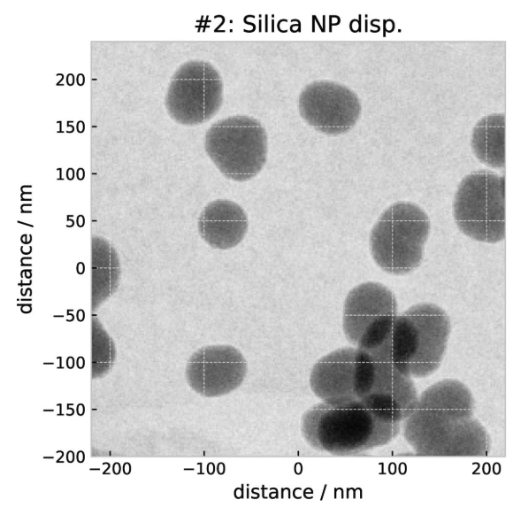
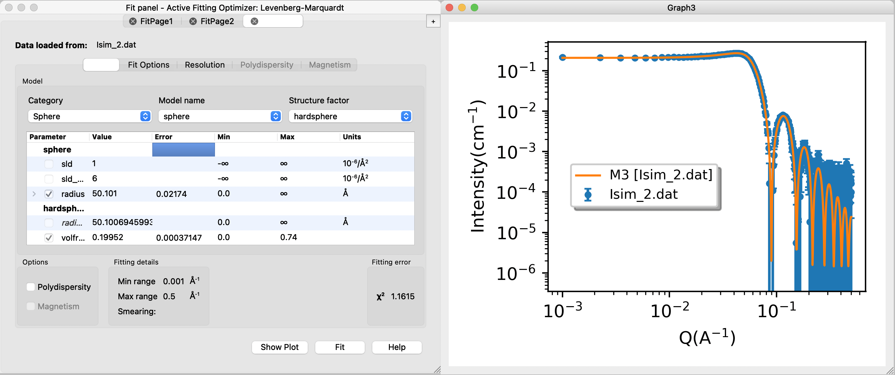

Home
Tutorial: Spheres
Contributors: Andreas Haahr Larsen, Martin Cramer Pedersen, Jacob Kirkensgaard, Viktor Holm-Janas.

The sphere is a basic shape and a good starting point for learing principles in small-angle scattering analysis.
Before you start
- Download and install SasView (on MacOS: you need to install Xcode first)
Learning outcomes
Learn how to fit a geometrical model to SAS data and apply this to answer structural questions about the sample.- Simulate SAS data of spherical particles, and determine which sample contains the larger particles, by visually comparing the curves.
- Describe the difference between the scattering from spheres and ellipsoids.
- Recognize interparticle interaction in a small-angle scattering experiment and know under what conditions this may happen.
- Discriminate a sample of polydisperse spheres from a sample of monodisperse spheres.
- Be able to fit a sphere in SasView and determine its size, and size distribution if it is polydisperse.
Part I: Monodisperse spheres
Go to Shape2SAS, and simulate a sphere with a 40 Å radius. You may have to click on the three lines in the top-left of the window, then "Calculations". Set parameters.
Press Submit. Shape2SAS generates three plots (besides from visualization of the particle):
- A pair distance distribution. This is a useful tool in SAXS and SANS analysis, but will not be used in this tutorial. See tutorial Pair distance distribution, p(r).
- Calculated scattering, normalized. This is the form factor, $P(q)$. It contains information about the size and shape of the particle.
- Simulated scattering, showing what real SAXS or SANS data for that sample may look like, if actually measured.

Try to compare with a smaller or larger sphere (as Model 2 in Shape2SAS). Notice the important inverse relation: larger particles have features at smaller $q$, and vice versa.
Download the data you just simulated: Isim.dat (or use this example data) (right click - save as...). Load the data into SasView and fit with an analytical sphere model
- Guide to basic fitting in Sasview:
- Press "Load data" and select your data.
- "Send data to" and choose "Fitting" in the drop-down menu.
- Your data should appear in the Fit panel (a separate window).
- Choose model category "sphere" from the first drop-down menu. There are many different sphere-like models, choose "sphere" under model name (second drop-down menu).
- Now you have some model parameters. You can click/select those you want to fit.
- Compute/plot gives the model scattering with the default values and without fitting: a plot with data (blue) and model (orange) is shown. The residuals (difference between model and data) are also shown in a separate window.
- Adjust some parameters manually, and press compute again. Try to manually find resonable values for scaling, background and radius.
- Try changing the value of the radius and notice the important inverse relation: larger radius moves all the features to smaller q values.
- Try to fit the data: check the parameters scale, background and radius, and press "Fit".
- A convergence plot is shown along with the other windows - this shows that the fitting algoritm has converged - you can ignore that.

Does the fitted radius match the input for your simulations (40 Å)? Is the fit "good" - as assesed by visual inspection and the reduced $\chi^2$. This value is displayed in the Fit panel.
Check for correlated parameters
- Correlated parameters:
- Two parameters are (partly) correlated if a change of the scattering curve induced by changing one of these parameters can be (partly) cancelled by changing the value of the other parameter.
- If you fit correlated parameters simultanaously, you will observe high uncertainties on the parameters values.
- The SLD values are correlated (due to Babinet's prinicle). That is, you can fit the data equally well with different combinations of sld and sld_solvent - as long as the contrasts is unchanged. The SLD values are also correlated with the scaling parameter.
- Consequently, if you fit multiple SLD values (and scaling), you will observe large uncertainties on these parameters (example).
- To prevent correlation, you can restrict the fit by fixing parameters. For this reason, sld_solvent is usually fixed, and in this example, you should also fix sld if scaling is fitted.
- Try to simulate and fit scattering from a sample of elipsoids. In SasView, these can be modelled with an ellipsoid of revolution (two radii are the same, one different), or a tri-axial ellipsoid (all radii are different). Note: for the ellipsoid of revolution model in SasView, ensure that you to use the right values for R_e (the two identical equitorial radii) and R_p (the polar radius).
- Try also to simulate and fit scattering from a sample of cylinder particles.
Part II: Polydisperse spheres
Polydispersity means that there are particles with different shapes or sizes in the sample, following some size distribution. That could be spherical nanoparticles with variation in their radius.
Polydispers silica nanoparticles (NP). Reprinted from Pauw et al., 2023, with permission.
To see the effect of polydispersity, go to: Shape2SAS, and simulate a sphere with a radius of 50 Å as Model 1 (monodisperse sample) and a sphere with radius of 50 Å and relative polydispersity of 0.1 as Model 2 (polydisperse sample).

Notice that the features (minima, oscillations) are "smeared out" in the polydisperse sample. This is because we see the sum of scattering comtirbutions from spheres having slightly different size, and therefore different positions of the minima. Note that larger polydispersity gives more smaring.
Try also to compare the scattering from polydisperse spheres with that of ellipsoid with semiaxes a = 50 Å, b = 40 Å, c = 60 Å, notice that the ellipsoidality also smears the scattering features, as the ellipsoid looks different from various angles (in contrast to a perfect sphere).
A Gaussian (normal) size distribution is used to simulate polydispersity in Shape2SAS, but many different size distributions are possible in real samples (Pauw et al., 2013).
Now, try to fit the data. Load your data (or this example data) into SasView and model the polydispersity. You need some extra steps, besides those you did in Part I
- Adding polydispersity in SasView
- Load the data as before, and choose the sphere model. Try to fit the data with a monodisperse sphere model first.
- Click the "Polydispersity" option in the lower left corner of the Fit panel.
- Click the (now active) "polydispersity" tab in the Fit Panel. Check the box "Distribution of radius". Give a non-zero number as default for the polydispersity (PD).
- Choose distribution on the right side. Default is Gaussian (a normal distribution), which is fine for this example, but other distributions can be chosen.
- Press fit
- Besides from the fit to data, residuals, and convergence, you also get a window with the fitted distribution of radii of spheres in the sample. By default it plots on log-log. If you right-click, choose and change scale to x and y (instead of logarithmic), you may recognise a normal distribution for the radius (example of output distribution).
Part III: Spheres with interparticle repulsion (hard-sphere structure factor)
If the concentration of particles in as sample is high, they may frequently "bump into each other". This will give rise to some characteristic distances (2 times the radius), which gives rise to change of the scattering.The additional scattering can (for some samples) be described by a so-called hard-sphere structure factor.

Illustration of a hard-sphere structure factor for a highly concentrated sample of spheres, giving rise to a characteristic distance. The scattering is the product of the form factor, $P(q)$), and the structure factor, $S(q)$.
To see the effect of inpterparticle interactions, go to: Shape2SAS, and simulate a sphere with a radius of 50 Å as Model 1 and a sphere with radius of 50 Å and hard sphere structure factor with volume fraction 0.2 and hard-sphere interaction radius of 50 Å as Model 2.

You will notice a "dip" at low $q$, which is characteristic for the hard-sphere structure factor. If an experimentalist is not interested in this effect, it may be removed by lowering the sample concentration. Try to simulate this by decreasing the volume fraction in the simulations (i.e the concentration), to see the structure factor effect gradually disappearing.
Try also to fit the data is SasView.
- Including a structure factor in SasView:
- Download the simulated data for spheres with hard-sphere structure factor and volume fraction 0.2 (or use this example data)
- Load the data into SasView and fit a sphere form factor (no polydispersity) - observe how the model fit deviates from the data, due to interparticle interactions.
- Add a hard-sphere structure factor to the fit. Structure factors are selected in the third drop-down menu in the Fit panel.

Does the fitted values match the input values for the simulations?
Challenges
- Challenge 1:Spherical nanoparticles were measured at high concentration (high conc data) and low concentration (low conc data). What are their shape and size (distribution)?
Tip: always inspect and compare data before you do any modelling. To do this in SasView, load the data, select the data, and under "Plot" press "Create new". - Challenge 2: A sample of discoidal particles (diameter ca 5 nm, as estimated from negative stain electron microscopy) was measured in SAXS at neutral pH (neutral pH data) and pH 5.0 (low pH data). What effect does the pH change have on the particles and their interaction?
- Challenge 3: You have measured a sample of spherical silica nanoparticles (SAXS data). Estimate their appriximate size (do not expect to get a very accurate fit, especially at high values of $q$. For more detailed analysis consult, see the Polydispersity tutorial).
Feedback
Help us improve the tutorials by- Reporting issues and bugs via our GitHub page. This could be typos, dead links etc., but also insufficient information or unclear instructions.
- Suggesting new tutorials/additions/improvements in the SAStutorials forum.
- Posting or answering questions in the SAStutorials forum.